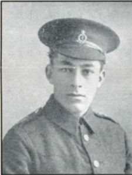

Thomas Edward Lion


Thomas Edward Lion worked for the Royal Mail Steam Packet Company before volunteering for the Royal Army Medical Corps in September 1914. He served as a stretcher-bearer in France and died aged 20 from wounds sustained during the Battle of Loos on 28 September 1915.
Civilian Life - Thomas was born at Stanmore on 23 January 1895 and was baptised in 1902 at St Martin-in-the-Fields. His parents were American, his father was born in Puerto Rico and his mother in Philadelphia (1901 census). Her maiden name was Boehmer. They married in 1893 in Paddington registration district.. His father was a nurseryman and florist at Park Nursery in Stanmore.
Thomas had an elder sister, Jeannette Helen. He was educated at the Lower School of John Lyon, Harrow-on-the-Hill, and by 1911, aged 16, was working as a junior clerk. Before the war, he became a member of the staff of the Royal Mail Steam Packet Company.
Military Life - After the outbreak of the First World War, Thomas volunteered for the Royal Army Medical Corps (Territorial Force), joining on 5 September 1914. He served as a Private, service number 265, with the 3rd City of London Field Ambulance, RAMC. He went to France on 16 January 1915 and served with a field ambulance unit on the Western Front. He was killed on the Western Front at Vermelles, near Loos-en-Gohelle in the Pas-de-Calais region of northern France. His death occurred during the catastrophic Battle of Loos (September 25 – October 13, 1915), which was the largest British offensive on the Western Front in 1915.
Unlike many RAMC personnel who succumbed to illness or died at base hospitals, Private Lion was killed in action while stretcher-bearing on the battlefield.On September 28, the fourth day of the intense Battle of Loos, his medical unit was tasked with evacuating a staggering volume of casualties directly from the frontline trenches under relentless German fire. Private Lion was killed instantly alongside two fellow RAMC medics—Private Kenneth Charles Goodyear (Service Number 345) and Private George Kraninger (Service Number 120)—while actively carrying or treating a wounded soldier under fire. He is buried at Bethune Town Cemetery in France, which was used heavily by the field ambulances and casualty clearing stations operating in the Loos sector.
Thomas was 20 years old. His section officer wrote: "He was one of those upon whom one could always rely to undertake any duty at any time and to do it well and cheerfully, and with good will. He was one of those competent men in whom his officers always had confidence, and they were never disappointed. He died gallantly in this battle, being hit by a shell in the trenches at the very outset, and died the same night in the Field Hospital. Two other members of his stretcher squad were killed at his side. He fell doing his duty and after having done it well for many months"; and a friend: "He was a fine fellow in every sense of the word, always ready to do anything, and there is not a man in the Corps that was not cut up about it."
He was buried at Bethune Town Cemetery in France. His death is recorded as 28 September 1915, and he is commemorated on memorials associated with John Lyon School and the Royal Mail Steam Packet Company. His parents later paid tribute to him with an addition to their family gravestone in the UK, which explicitly notes his age, date of death, and that he was killed in action in France